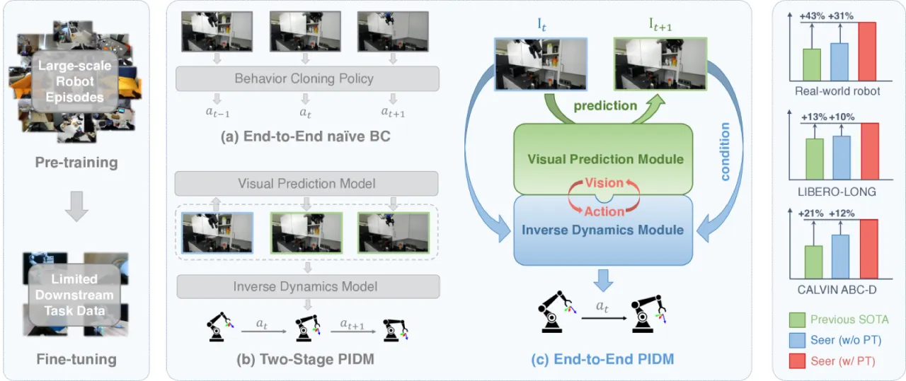
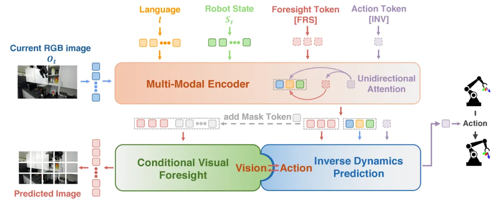
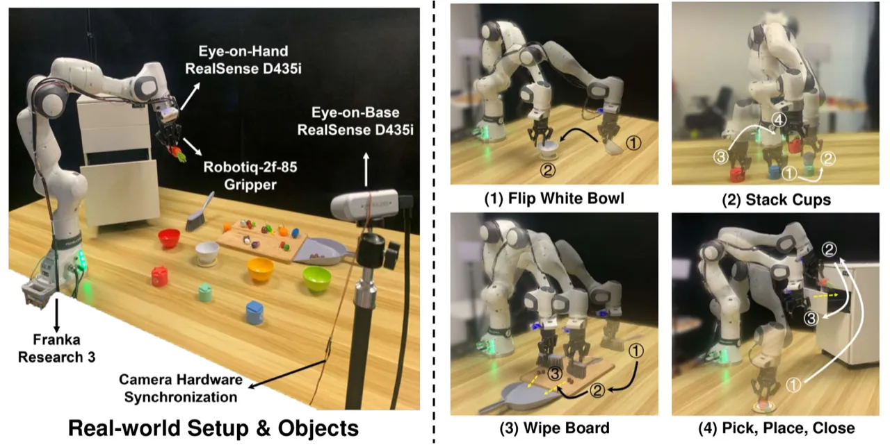
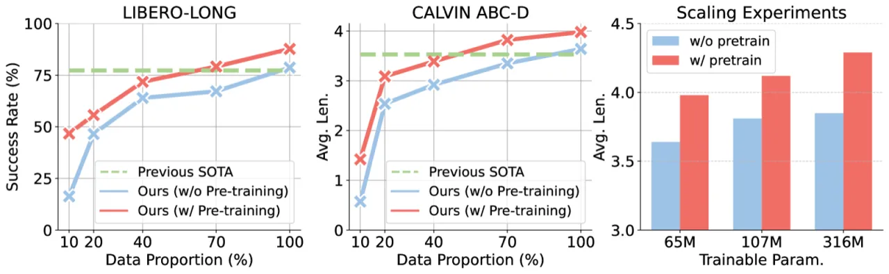
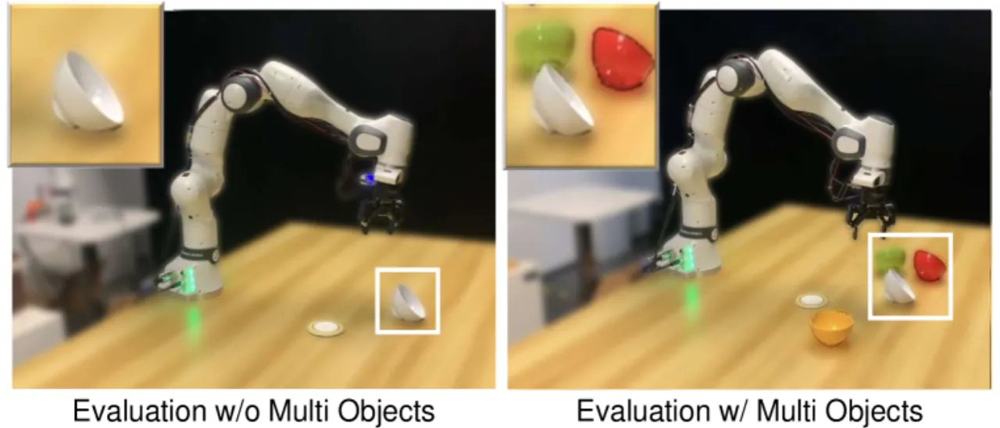

本文提出 PIDM（Predictive Inverse Dynamics Models），其实例 Seer 将视觉预测（conditional visual foresight）与逆动力学预测（inverse dynamics prediction）统一在一个端到端的 Transformer 框架中。在 DROID 数据集上预训练后，Seer 在 LIBERO-LONG 上取得 87.7% 成功率，在 CALVIN ABC-D 上以 4.28 的平均完成任务数刷新 SOTA，真实机器人任务成功率较从零训练提升 43%。
机器人操作学习面临两条主流路线的天然裂痕：以动作为中心的行为克隆（behavior cloning）能直接产生动作，但难以利用丰富的视觉先验；以视觉为中心的世界模型或表征预训练能捕捉丰富的视觉语义，却与最终动作预测存在鸿沟。如何将两者无缝融合，是本文要回答的核心问题。
"We propose an end-to-end framework called Predictive Inverse Dynamics Models (PIDM), which integrates conditional visual foresight and inverse dynamics prediction to close the vision-action loop."

Seer 以一个统一的 Transformer 骨干处理多模态输入（RGB 图像、语言指令、机器人状态），通过两个特殊 token——[FRS] 和 [INV]——分别负责视觉预测和动作预测，并以单向注意力掩码让动作生成能同时看到历史帧和未来预测帧，从而实现视觉与动作的协同优化。

[FRS] token 在语言目标 g 和历史观测序列 ht 的条件下，预测 n 步后的未来 RGB 图像 ot+n。这一模块迫使模型学习场景的物理动态，而非仅记忆动作-观测对应关系。预训练时使用 DROID（76,000 条轨迹）进行大规模视觉动力学学习，历史帧长度为 7–10 帧。
[INV] token 通过单向注意力掩码同时"看到"过去帧和 [FRS] 预测的未来帧，从而以视觉语境为桥梁推断中间动作序列。动作预测步长（action horizon）为 3 步。标准 Seer 骨干含 24 层 GPT-2 block，hidden size 384，12 heads，可训练参数 65M；Seer-Large 可训练参数增至 315M。
两阶段训练：首先在 DROID 上以 batch size 640–2048、学习率 1e-4 进行 20–30 epoch 预训练，让模型掌握通用的视觉动力学知识；随后在下游任务（每任务仅 100 条演示）上以学习率 1e-3 进行 20–40 epoch 微调。预训练阶段视觉编码器（ViT-B，251M 参数）保持冻结，仅更新 Transformer 骨干和解码器。
在三个评测场景上验证 Seer：（1）模拟仿真——LIBERO-LONG（长时序操作）和 CALVIN ABC-D（跨场景泛化）；（2）真实机器人——Franka Research 3，6 个任务（4 个泛化任务 + 2 个精度任务），共 900+ 次试验；（3）数据效率与规模扩展实验。
| 方法 | 平均成功率 |
|---|---|
| MTACT | 41.0% |
| OpenVLA | 54.0% |
| MVP | 68.2% |
| MPI | 77.3% |
| Seer (scratch) | 78.7% |
| Seer（本文） | 87.7% |
| 方法 | 平均任务数 (↑) |
|---|---|
| Roboflamingo | 2.47 |
| Susie | 2.69 |
| GR-1 | 3.06 |
| 3D Diffusor Actor | 3.27 |
| CLOVER | 3.53 |
| Seer (scratch) | 3.64 |
| Seer（本文） | 3.98 |
| Seer-Large（本文） | 4.28 |
| 方法 | 平均成功率 | 平均得分 |
|---|---|---|
| OpenVLA | 16.7% | 11.0 |
| MPI | 48.4% | 29.3 |
| MVP | 55.0% | 29.8 |
| Seer (scratch) | 60.0% | 32.8 |
| Seer（本文） | 78.4% | 39.5 |



在 CALVIN ABC-D 上进行消融，结论如下：单独引入视觉预测微调目标从 3.31 提升至 3.41；同时引入视觉预测与逆动力学两个目标达到 3.64。进一步加入预训练：仅预训练视觉预测目标达 3.73，两个目标均预训练达到最优 3.98。说明视觉预测与逆动力学两个模块在预训练和微调两个阶段均能协同互补，缺一不可。
论文作者明确指出："We only evaluate six downstream tasks, lacking a broader assessment of high-precision and contact-rich manipulation scenarios."（仅评测了六个下游任务，缺乏对高精度和接触密集型操作场景的更全面评估。）精细装配、力控操作等任务尚未涵盖。
作者明确表示："Evaluating across different robots is also necessary to test Seer's cross-embodiment capability"，但当前所有实验均在 Franka Research 3 上进行，跨机体迁移能力有待探索。
视觉预测目标使用像素均方误差 ℒfore = ‖ffore(g, ht) − ot+n‖²₂，这在预测多步模糊未来时容易产生模糊（blurry）图像，可能限制对细粒度操作状态的预测质量。此条为作者未明确指出、从设计推断的局限性。